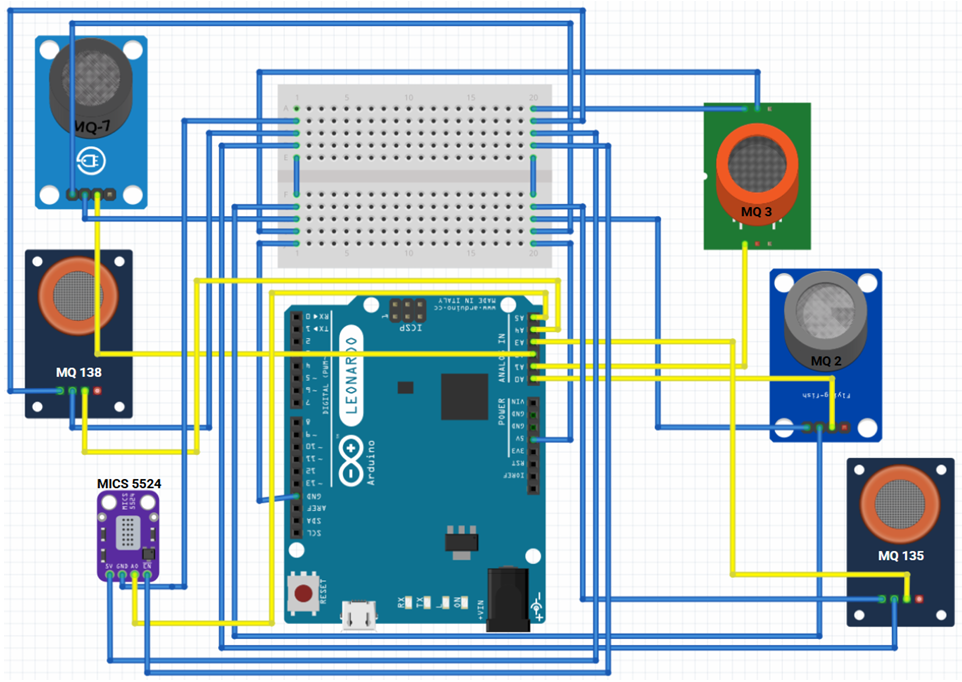
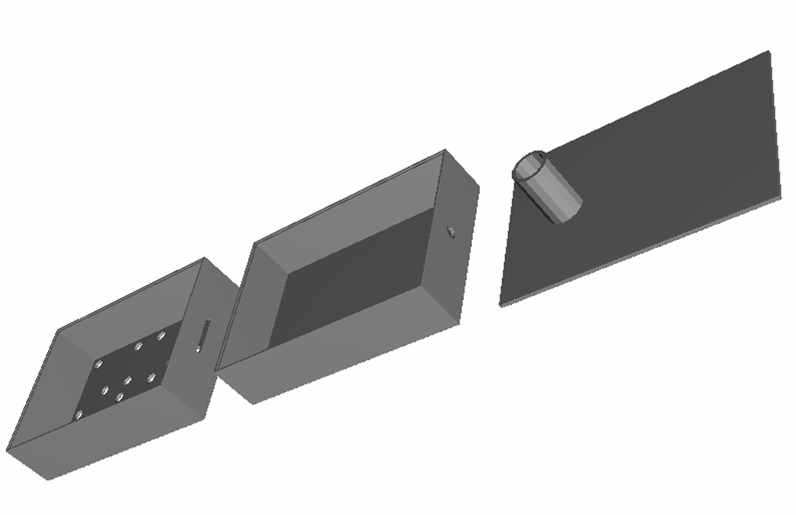
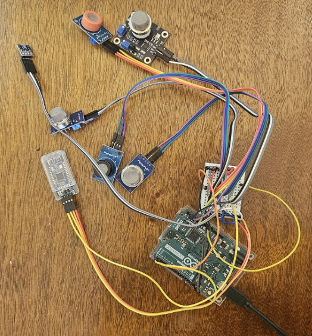
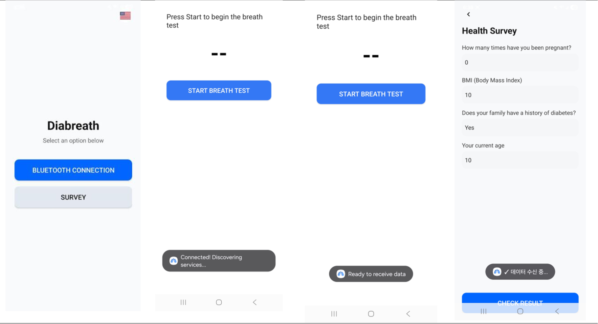

I. Introduction
The increasing number of diabetic patients each year necessitates an easy method to diagnose the disease. More than 80% of all diabetes cases are estimated to be undiagnosed diabetes mellitus (UDM), presenting a significant global health challenge.
Current methods of diagnoses remain mostly invasive, costly, and limited to the environment. These limitations contribute to the high rates of undiagnosed diabetes, creating a need for alternative diagnostic approaches.
Human breath contains volatile organic compounds (VOCs) that can serve as biomarkers for disease states. This presents an opportunity for developing noninvasive diagnostic tools for diabetes screening.
This research presents DiaBreath, a portable, cost-effective system that combines VOC analysis from breath samples with machine learning algorithms to provide rapid, noninvasive diabetes diagnosis. By leveraging ensemble learning techniques and multimodal data fusion, the system achieves diagnostic accuracy comparable to traditional methods while offering unprecedented accessibility and ease of use.
II. Methodology
A. Data Collection
Multiple ML models were trained using breath and patient-reported data. The data collection protocol was designed to capture both VOC signatures from breath samples and relevant patient information through a survey questionnaire.
B. Diagnostic Pipeline
The gas sensor values are obtained via the Arduino, while a survey questionnaire yields patient reported data. The data is sent to a smart device that is connected to the Arduino via bluetooth, where the data gets used as inputs to process it through the ML model, outputting the final diagnosis result.
C. Machine Learning Models
To develop the ML models more reliable across all the data, they were cross validated using the k-fold method, increasing the reliability of the evaluation method. The hyperparameter of each ML model was also tuned using a grid search algorithm. Finally, the breath VOC and patient reported data ML models are ensembled to take a multimodal AI approach in diagnosing diabetes.
III. Device & Application
A. Hardware Design
A handheld device was created with MQ gas sensors along with an Arduino to measure VOCs emitted from human breath. The device is used to get the VOC data for the ML models.



B. Android Application
The companion Android application receives data from the Arduino device via Bluetooth. The ML model processes the VOC data along with patient-reported data to output the final diagnosis result.

IV. Results
Across the VOC based model and patient-reported based models, the highest ROC achieved was 94%.
V. Conclusion
This study aims to make a quick, noninvasive method to diagnose diabetes by creating a low-cost, portable machine that analyzes human breath and uses machine learning to predict the disease using volatile organic compound data from the breath and patient-reported data. The multimodal ensemble approach achieved 94% ROC-AUC, demonstrating the effectiveness of combining VOC analysis with patient-reported data for diabetes diagnosis.
VI. Comments & Discussion
Questions, feedback, and scholarly discussion are welcome below.